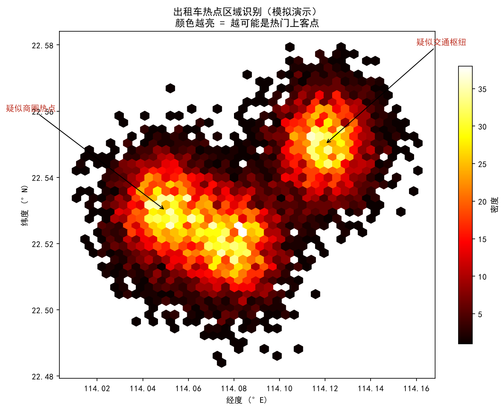

热点识别：车爱停在哪，城市就热在哪
"热点"在出租车数据里有两层含义： 空间热点（车 frequent 聚集的位置）和需求热点（容易打到车、或很难打到车的位置）。 识别它们，是出租车调度、公交线路优化、商圈选址的共同起点。
"热点"到底是什么？
在轨迹数据里，热点通常表现为：
- 驻停热点：大量车长时间停留（商圈、医院、交通枢纽）
- 上下客热点：空车→载客或载客→空车的切换点（深圳有 passenger 字段时最准）
- 低速热点：速度长时间接近 0，但车很多（拥堵路段）
两种识别方法
方法 A：停留点检测 + 密度聚类（DBSCAN）
先用速度/时间阈值找出每辆车的停留点，再把所有车的停留点堆在一起，用 DBSCAN 把邻近点聚成簇。 DBSCAN 不需要预先指定簇数量，适合城市这种"热点数量未知"的场景。
- eps：两个点距离多远还算"邻近"（如 100–200 米）
- min_samples：一个簇至少要有多少个点才算稳定热点（如 20–50 个停留点）
参数不是死的：市区道路密，eps 要小；郊区稀疏，eps 要大。通常先用小 eps，再观察簇数。
方法 B：核密度估计（KDE）
不区分车辆，直接把全部 GPS 点看作"事件"，用高斯核估计出连续的热点概率面。 颜色越亮的地方越可能是热点。KDE 平滑、直观，适合做城市级总览；但它会把所有慢速/停留都混在一起， 所以常被用来先定位大致区域，再用停留点聚类细化。
模拟演示：基于 KDE 的热点识别
下面这张图是模拟生成的：在深圳市中心附近放了 3 个高斯簇，模拟商圈、交通枢纽和居住密集区， 然后用 hexbin 热力图画出来。颜色越亮，代表该位置越"热"。

深圳真实数据里的"空车热点"
深圳数据因为有 passenger 字段，可以直接看"空车在哪巡游"——空车密集区往往是需求旺盛但暂时没上客的区域，
或司机普遍认为"在这里能等到单"的区域：

- 把"空车密度高但载客切换少"的区域标为供给过剩区（司机太多，竞争激烈）；
- 把"载客切换密度高"的区域标为真实需求热点（人或货真的在这里上车）。
热点识别流程
- 数据清洗
去重、越界点剔除、时间排序。
- 停留点检测
速度≈0 + 持续 N 分钟以上 → 记为一个停留点。
- （可选）结合 passenger 字段
空车→载客 = 上客点；载客→空车 = 下客点。
- 聚类或密度估计
DBSCAN 定簇边界，或 KDE 画连续热点面。
- 人工标注意义
把每个簇对照地图判断是商圈、医院、车站还是红绿灯 artifact。